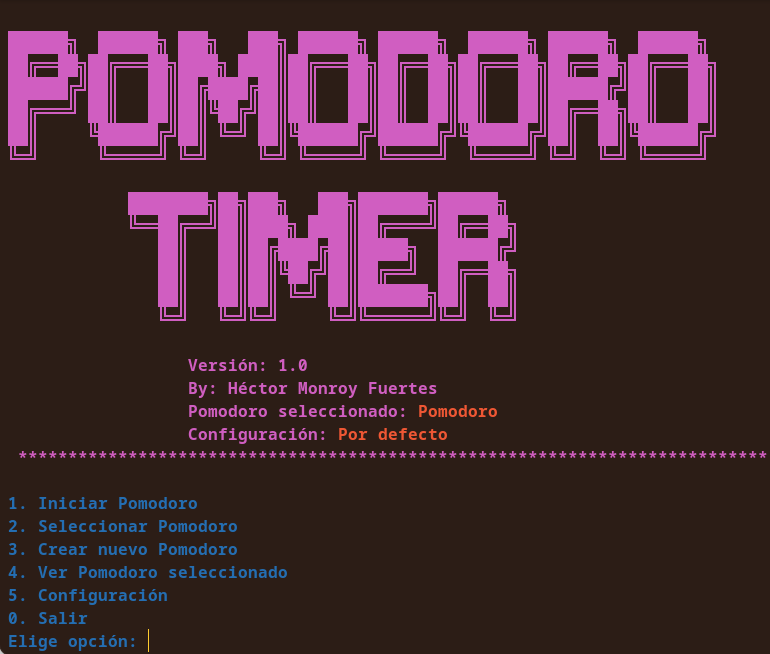
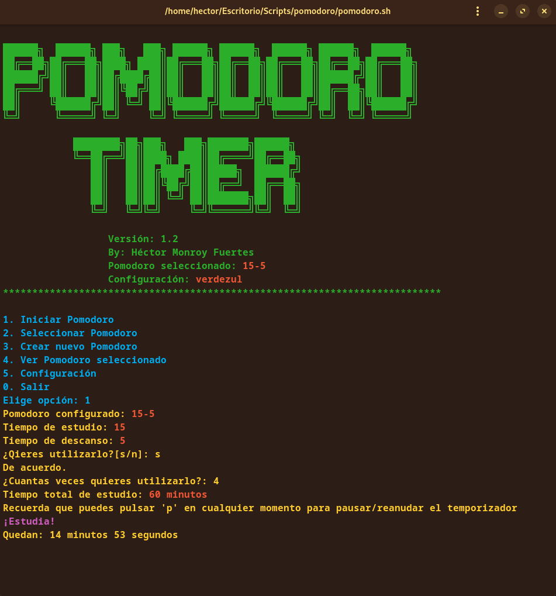
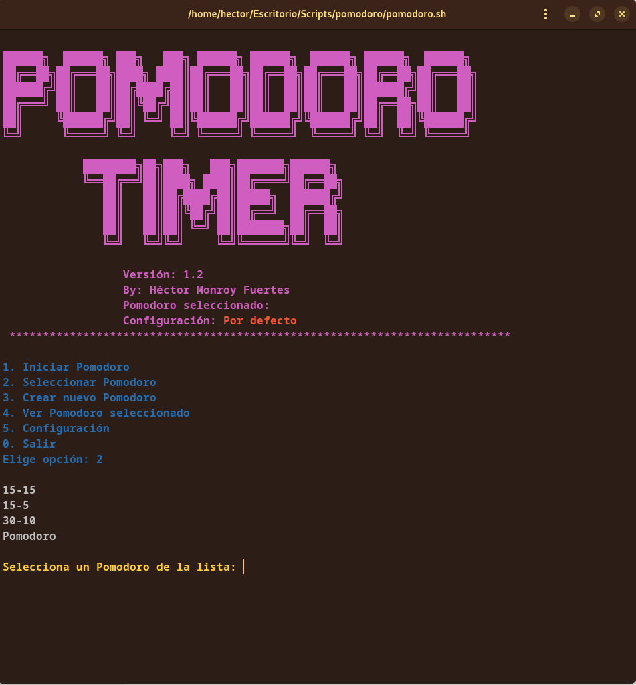

Pomodoro Timer
Menú principal del script.
Origen del proyecto
Este proyecto surje de mis sesiones de estudio, en las que al llevar ya varias horas estudiando empieza a perderse la concentración y el foco. Así fue como descubrí el método Pomodoro, al buscar tecnicas que permitiesen mejorar la concentración.
¿Como funciona?
Este proyecto, 100% Shell, funciona en cualquier distribución de Linux sin instalar nada.
Siemplemente clona el repositorio:
git clone https://github.com/HectorCRM/Pomodoro_Timer.git
Dale permiso de ejecución:
chmod +x pomodoro-timer.sh
Y ejecútalo:
./pomodoro-timer.sh
Una vez ejecutado aparecerá el menú principal:
- Iniciar Pomodoro(Previamente hay que selecionar el que queremos utilizar). El temporizador puede ser pausado/reanudado pulsando la letra 'p' en el teclado. 
- Seleccionar Pomodoro: Esta opción permite elegir entre los pomodoros que hayamos creado. una vez elegido se mostrara en la cabecera del script el Pomodoro seleccionado. 
- Crear nuevo Pomodoro: Mediante esta opción podemos crear nuevos Pomodoros personalizados.
- Ver Pomodoro seleccionado: Esta opción nos mostrará del Pomodoro seleccionado su nombre, la duración, la duración del descanso, la fecha de creación y el numero de veces que ha sido utilizado.
- Configuracion
- Crear configuración: Permite crear combinaciones de color diferentes para el script, modificando el color de la cabecera y de los menus de forma independente. Muestra los colores disponibles.
- Seleccionar configuración: Permite seleccionar las diferentes configuraciones creadas. Una vez seleccionada, en la cabecera del script dejara de mostrar configuracion por defecto y mostrará el nombre de la que se ha seleccionado.
- Eliminar configuración: Permite eliminar configuraciones desde el propio script.
- Salir
Pomodoro en marcha.
Selección de dsitribucion de tiempo.
0. Salir